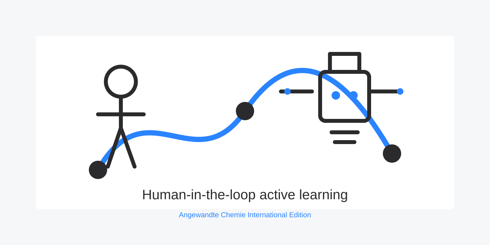

This work explored how active machine learning can support discovery in a chemical space where both molecular self-assembly and crystallization must happen together.
The project compared human-guided and robot-guided strategies in the search for gigantic polyoxometalates, showing how structured experimental workflows can expose productive regions of a difficult chemical landscape.
Follow-on work developed the human-in-the-loop angle further, testing how joint human-robot teams perform when intuition, machine learning, and automated experimentation are combined.
// Published in Angewandte Chemie International Edition, 2017, with follow-on work in JCIM.
Sources: Human versus Robots in the Discovery and Crystallization of Gigantic Polyoxometalates and Intuition-Enabled Machine Learning. Visual prepared for ChemoBotAI from the publication theme.
Back to projects